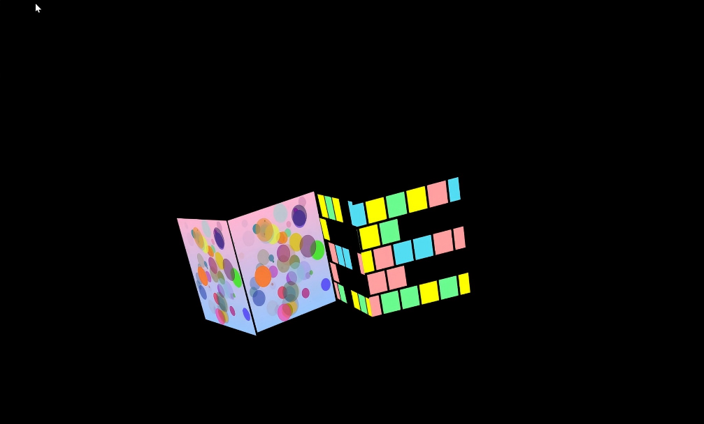

Creative Coding Assignments
1. Week 7
In this projection mapping assignment, I wanted to try to create continuity between different faces of a cube, so I made rows of squares that can move left and right. When I finished drawing the first Quad and wanted to try adding a second Quad, I originally thought it would be as complicated as when we combined the three Quads from our group in class. But because I had already created a function for the first pattern, when I wanted to create an identical Quad, I only needed to add a new quad2, add “myQuad2.displaySketch(ZiyanDraw);“, and create the new canvas to complete it! I feel that this is really much easier than drawing the small squares one by one like before. Then, I tried making some changes to the second Quad. At first, I changed the background color and the number of squares, but I felt that the new background color didn't work well with the overall visual effect, so I changed it back to black. After that, I made some of the squares in the second Quad randomly disappear and increased the distance each row of squares could move horizontally, making the two Quads look different. Finally, I also tried adding two Quads we created in class, hoping to combine different animation effects in the same projection mapping project.
